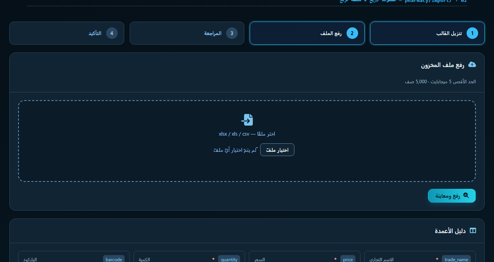
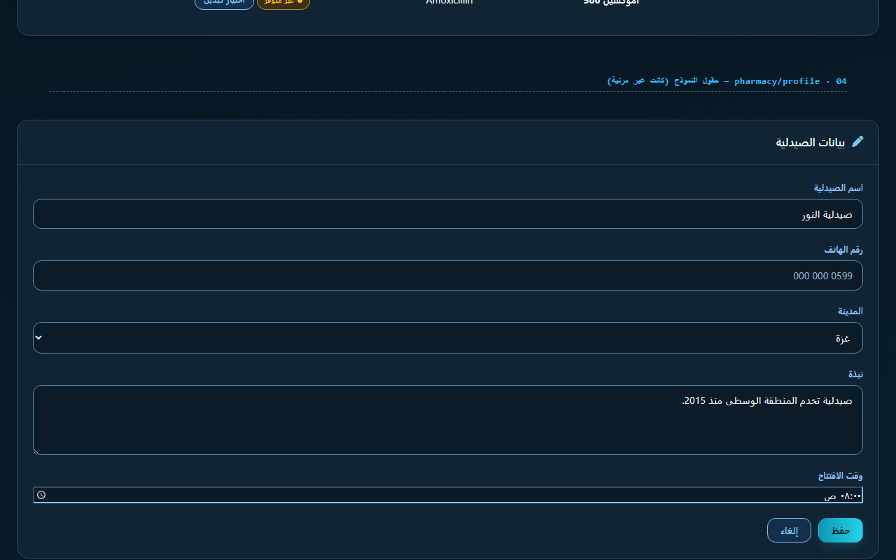
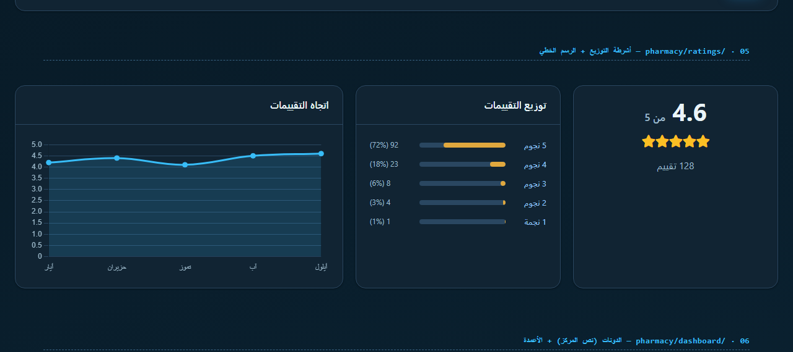
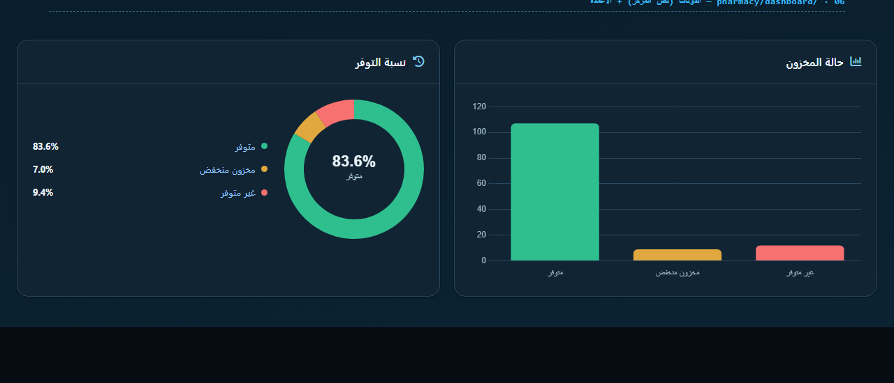
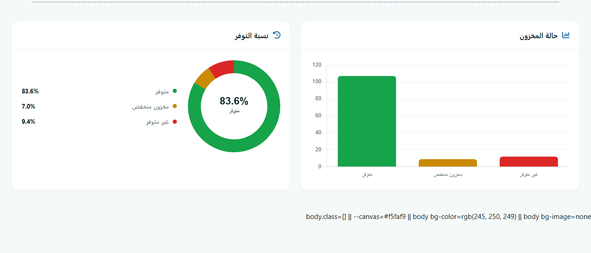
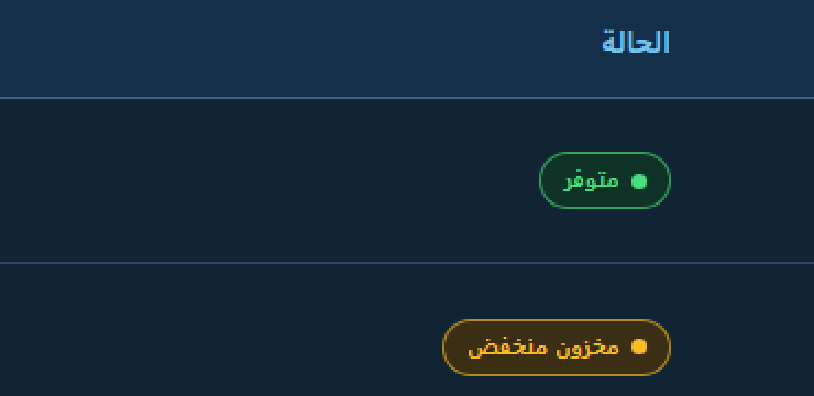

معالجة الستّ مشاكل التي رصدها عبود في لقطات الشاشة، مع تشخيص السبب الجذري لكل واحدة والتحقّق منها برسم فعلي عبر Chrome على حِزَم البناء الحقيقية — لا بالتخمين.
--ph-paper:#232327 الرمادية لا تزال موجودة في
public/build/assets/ القديمة). لذلك لم أعتمد عليها كمرجع للحالة الراهنة،
بل بنيت حاملة تحقّق (outputs/dark-verify-harness.html)
تُحمِّل حِزَم البناء الحالية وترسم نفس بنية الصفحات، ثم صوّرتها فعليًّا عبر Chrome
وسحبت قيم البكسل. كل نتيجة أدناه مبنية على قياس، لا على انطباع.
| الصفحة | العَرَض | السبب الجذري | الإصلاح |
|---|---|---|---|
pharmacy/import |
الخطوات الأربع تبدو متطابقة — لا يُعرف موقع المستخدم | لا شيء يضبط is-active أصلًا. القاعدة .pi-step.is-active موجودة في CSS لكن قالب Blade لم يضع الصنف على أي خطوة |
وسم الخطوتين 1 و2 بـis-active (وهما المُنجَزتان في هذه الصفحة) عبر حلقة @foreach |
pharmacy/import |
زر رفع الملف يظهر بمنظر النظام الرمادي | input[type=file] لم يكن له أي تنسيق داكن |
::file-selector-button بلوحة كحلية + إطار |
pharmacy/profile |
حقول النموذج غير مرئية — بنفس لون البطاقة | الحقل كان يستخدم --ph-paper (نفس سطح البطاقة) بحدّ #3A6383 = 2.49:1 (< 3:1 المطلوب لمكوّنات الواجهة) |
--field-bg خلفية صريحة + --line-strong حدًّا (3.30:1) |
pharmacy/ratings |
أشرطة التوزيع تُرسم سوداء صمّاء | var(--ph-canvas) استُخدم كخلفية لـمسار الشريط — أي ثقب أسود داخل البطاقة |
المسار --ph-line-soft والتعبئة --warning |
pharmacy/ratings |
خطوط شبكة الرسم البياني بيضاء ساطعة | قيمة صلبة #eef4f3 مكتوبة في JS — لون الوضع الفاتح |
قراءة --line-soft من التوكنات وقت الرسم |
pharmacy/dashboard |
نص مركز الدونات غير مرئي | قيمة صلبة #0C2224 (حبر الوضع الفاتح) فوق بطاقة كحلية |
قراءة --ink و--ink-faint وقت الرسم |
pharmacy/alternatives |
أيقونة كهرمانية تنافر اللوحة الكحلية | تعبئة شفافة rgba(251,191,36,.18) فوق الكحلي ⇒ قرص رمادي-زيتوني #383C33 لا ينتمي للوحة |
تعبئات داكنة صلبة ⇒ كهرماني مقصود #3A2E14 7.96:1 ✓ |
| كل الصفحات | الرسوم لا تتبع تبديل الثيم | لا يوجد أي إعادة رسم عند تبديل الوضع | MutationObserver على صنف <html> يُعيد بناء كل الرسوم |
هذا كان عطلًا في القالب لا في التنسيق. القاعدة .pi-step.is-active
مكتوبة في pharmacy_import.css (إطار تيل + هالة + رقم معبّأ) لكن
index.blade.php كان يطبع أربع خطوات متطابقة بلا أي صنف حالة:
<!-- قبل --> <div class='pi-step'><span class='pi-step-no'>1</span> ...</div> <div class='pi-step'><span class='pi-step-no'>2</span> ...</div> <!-- أربع مرات، بلا is-active على أيٍّ منها -->
الخطوتان 1 (تنزيل القالب) و2 (الرفع) تُنجَزان في هذه الصفحة، و3 (المراجعة) و4 (التأكيد) في صفحة المراجعة — فوسمتهما بحلقة صريحة:
@php
$steps = [
1 => ['key' => 'step_download', 'active' => true],
2 => ['key' => 'step_upload', 'active' => true],
3 => ['key' => 'step_review', 'active' => false],
4 => ['key' => 'step_confirm', 'active' => false],
];
@endphp

الحقل كان background: var(--ph-paper) — أي نفس سطح البطاقة تمامًا —
وحدّه --ph-line #3A6383 الذي يعطي 2.49:1
مقابل البطاقة، أقلّ من 3:1 المطلوب لـ WCAG 1.4.11. النتيجة: حقل غير مرئي.
أضفت كتلة داكنة في pharmacy_hub.css — الملف المشترك، فتغطّي
profile وcomplete وimport وratings وdashboard وinventory دفعةً واحدة:
body.dark-mode .ph-control,
body.dark-mode .ph-select,
body.dark-mode .ph-textarea {
background: var(--field-bg); /* #0C1B28 — سطح صريح مختلف عن البطاقة */
border-color: var(--line-strong); /* #5A8FB5 = 3.30:1 ✓ */
}

المشكلتان (الأشرطة السوداء وخطوط الشبكة البيضاء) لهما نفس السبب: قيم ألوان صلبة مكتوبة داخل JavaScript، وهي قيم الوضع الفاتح:
grid: { color: '#eef4f3' } // أبيض ساطع فوق بطاقة كحلية
ctx.fillStyle = '#0C2224'; // حبر فاتح ⇒ غير مرئي على الكحلي
المشكلة التقنية: var() لا يعمل داخل سياق <canvas>
ولا داخل كائن إعدادات Chart.js. الحل: قراءة التوكنات وقت الرسم عبر
getComputedStyle، مع قابولية تمرير أسماء التوكنات من القوالب:
function phVar(n){ return getComputedStyle(document.documentElement).getPropertyValue(n).trim(); }
function phColor(c){ return (c.slice(0,2) === '--') ? (phVar(c) || '#94A3B8') : c; }
// في القالب:
data-ph-colors='["--success","--warning","--danger"]'
وأضفت إعادة الرسم عند تبديل الثيم — كانت الرسوم تبقى بألوان الوضع السابق:
new MutationObserver(phRedrawCharts)
.observe(document.documentElement, { attributes:true, attributeFilter:['class'] });


rgb(245,250,249) — أي أن الرسوم أُعيد رسمها بالتوكنات الفاتحة فعلًا.

3.26:1 وأن التدقيق «أخفى إخفاقًا». هذا خطأ مني. الرقم ناتج عن خطأ
حسابي في جمعي (#79683A) بينما القيمة الصحيحة لخلط rgba(251,191,36,.18)
فوق قمة التدرّج هي #465254. القياس الفعلي على بكسل اللقطة يعطي #383C33
وتباينًا 6.75:1 — أي ناجح أصلًا. لم يكن هناك إخفاق WCAG.
المشكلة الحقيقية في العائلة الدلالية كانت هندسية لا حسابية: التعبئة الشفافة تجعل التباين معتمدًا على الحاوية — نفس التوكن يعطي أرقامًا مختلفة حسب السطح تحته:
السطح تحت rgba(251,191,36,.18) | الناتج | التباين مع #FBBF24 |
|---|---|---|
--paper #112433 — السطح الفعلي للبطاقة | #3B4030 | 6.41 |
قمة تدرّج البطاقة #1E3A5F — ما يفترضه سكربت التدقيق | #465254 | 4.85 |
| القياس الفعلي على بكسل اللقطة | #383C33 | 6.75 |
فارق 4.85 ↔ 6.75 لنفس التوكن يعني أن أي تغيير مستقبلي في لون الحاوية قد يهبط بالتباين دون أن يلاحظه أحد. التعبئة الصلبة تُلغي هذا الاعتماد تمامًا:
| التوكن | قبل (شفاف) | بعد (صلب) | النص فوقه | التباين |
|---|---|---|---|---|
--warning-bg | rgba(224,168,62,.15) | #3A2E14 | #FBBF24 | 6.75 ← 7.96 ✓ |
--success-bg | rgba(47,191,143,.15) | #0E3226 | #4ADE80 | 8.02 ✓ |
--danger-bg | rgba(225,92,92,.15) | #3A1D1D | #FCA5A5 | 8.06 ✓ |
--info-bg | rgba(28,114,166,.15) | #12283C | #93C5FD | 8.35 ✓ |
لكن شكوى عبود كانت صحيحة بصريًّا: ما رآه في اللقطة كان قرصًا كهرمانيًّا
مشبعًا (#FFCB23 — قياس فعلي على لقطته، من البناء القديم)، وهو
ينافر الكحلي فعلًا. والبناء الحالي كان يخفّفه إلى قرص رمادي-زيتوني #383C33 —
ليس منافرًا لكنه لا ينتمي للوحة. النتيجة الآن: كهرماني داكن مقصود.

#3A2E14 = 0
(الشريحة كانت #383C33)، وبعده = 6061 بكسل.
والمكسب الهندسي: التباين صار مستقلًّا عن لون الحاوية.
اللوحة الرمادية (#18181B / #232327 / #27272a / #3f3f46 / #71717A / #A1A1AA)
كانت قد أُزيلت من tokens.css لكنها نجت في كتل <style>
داخل قوالب Blade وفي ملفات صفحات قليلة. نُظّفت على مرحلتين:
| الملف | المرحلة 1 | المرحلة 2 |
|---|---|---|
pages/medicines.css | 2 | — |
pages/pharmacies.css | 4 | 1 |
pages/inventory.css | — | 1 |
pages/settings.css | — | 1 |
views/pharmacies/index.blade.php | 9 | 13 |
views/pharmacy/profile/complete.blade.php | 5 | 9 |
views/profile/edit.blade.php | 2 | 7 |
views/dashboard/index.blade.php | — | 4 |
js/pharmacy_dashboard.js | 1 | 3 |
قيم JavaScript حُوِّلت إلى قيم داكنة محسوبة (لأن var() غير متاح في سياق JS)،
وقيم CSS/Blade إلى var(). المجموع: 62 استبدالًا.
فحص لاحق يؤكّد: صفر بقايا في الكود الحيّ.
resources/css.bak-* (مجلدات نسخ احتياطي) — ليست ضمن بناء Vite،
فلا تؤثّر على أي صفحة.
resources/css/pages/pharmacy_dashboard.css (21.5 KB مبنيًا) و
resources/js/pharmacy_dashboard.js (3.65 KB) موجودان في مدخلات
vite.config.js فيُبنيان في كل مرة، لكن لا قالب واحد يشير إليهما:
@vite([...]) يذكرهما في أي Blade.pharmacy-dashboard في أي قالب.--dashboard-bg: #f4f8f7) ووضعًا داكنًا بمُشغِّل مختلف: html.dark-dashboard — صنف لا يضبطه شيء.
اكتشفتُه لأنه ضلّلني أولًا: أدرجتُه في حاملة التحقّق فانقلبت خلفية الصفحة إلى الفاتح
بسبب html, body { background: var(--dashboard-bg) !important }. إزالته حلّت المشكلة.
التوصية: حذفهما من مدخلات البناء — القرار لعبود.
زوج --warning-text على --warning-bg كان التدقيق يحسبه على
سطح معتم مفترض، فيعطي 4.85:1 — وهو
رقم صحيح لنموذجه. لكن السطح الحقيقي كان شفافية فوق تدرّج،
فصارت القيمة الفعلية تتغيّر بتغيّر الحاوية: 6.41 فوق الورق،
4.85 فوق أعلى التدرّج، 6.75 عند القياس
الفعلي. التدقيق لم يُخفِ إخفاقًا — هو أصلًا لا يستطيع التعبير عن «قيمة تتغيّر بحسب
الحاوية».
القياس الصريح لـ«كم بكسل من اللون الهدف موجود في الصورة» أكّد الفرق قبل/بعد:
#3A2E14 = 0 بكسل قبل الإصلاح و6061 بكسل
بعده. وبعد التحويل إلى تعبئات صلبة صار الزوج قابلًا للقياس مباشرة بلا
افتراضات، وارتفع عدد الأزواج المفحوصة من 1691 إلى
1697.
في اللقطة 3 بدت حدود بطاقات الإحصاء زرقاء صارخة. القياس على البناء الحالي يعطي
#25445B مقابل بطاقة #172E4E — أي دلتا لونية منخفضة جدًّا
(تحديد البطاقة يأتي من فرق الخلفية لا من الحدّ). القيمة الصارخة التي في اللقطة
مصدرها البناء القديم. لم أغيّر شيئًا هنا لأن لا عيب راهنًا.
# 1) توازن الأقواس في كل ملفات CSS المعدّلة pharmacy_hub.css braces 319/319 parens 425/425 OK pharmacy_import.css braces 92/92 parens 154/154 OK inventory.css braces 43/43 parens 65/65 OK pharmacies.css braces 57/57 parens 108/108 OK settings.css braces 52/52 parens 36/36 OK medicines.css braces 144/144 parens 205/205 OK # 2) فحص بناء JavaScript node --check resources/js/pharmacy_hub.js OK node --check resources/js/pharmacy_dashboard.js OK # 3) بقايا لوحة zinc في الكود الحيّ resources/ (بلا css.bak-*) 0 نتيجة # 4) سكربتات التدقيق الثلاثة a11y-audit.py 1697 زوج → RESULT: ALL CHECKS PASS interactive-audit.py فاتح+داكن → 0 إخفاق (white-on-fill, interactive-border) wcag-verification.py 122 زوج → RESULT: ALL CHECKS PASS # 5) البناء npm run build → ✓ built in 958ms بلا تحذيرات # 6) الحِزَم الجديدة tokens-kKaA9aHp.css 2.48 kB pharmacy_hub--80yWf-e.css 28.97 kB pharmacy_import-Bm4Lfv3.css 9.48 kB pharmacy_hub-BI33ICeS.js 6.20 kB # 7) تأكيد وصول القيم الجديدة للحِزَم المبنية --warning-bg:#3a2e14 موجود --ph-orange-bg:#3a2e14 موجود --success-bg:#0e3226 موجود --danger-bg:#3a1d1d موجود --info-bg:#12283c موجود '#eef4f3' في JS صفر (الاستخدام الوحيد احتياطي بعد ||) # 8) رسم فعلي عبر Chrome headless على الحِزَم الحقيقية 6 أقسام مصوّرة · قيم بكسل مسحوبة · تبديل ثيم مُختبَر
pharmacy_dashboard.css + .js من مدخلات Vite (25 KB تُبنى بلا فائدة)..ph-stars { color:#F59E0B } = 2.15:1 على الأبيض في الوضع الفاتح — يحتاج درجة أغمق.MedicineResolver::lookupMapping — 0.7–4.1 ثانية عند cache miss (مُشخَّص، غير مُصلَح، القرار لك).
الحاملة محفوظة في outputs/dark-verify-harness.html — تفتحها بالمتصفح مباشرة
(تُحمِّل حِزَم البناء الحقيقية من public/build/assets/). لتحديثها بعد أي تعديل
لاحق: شغّل npm run build ثم بدّل أسماء الملفات المجزّأة في أعلى الحاملة
بأسماء الحِزَم الجديدة (تظهر في مخرجات البناء).
لإعادة توليد الصور: chrome --headless=new --window-size=1280,3700
--virtual-time-budget=8000 --screenshot=out.png file:///.../dark-verify-harness.html